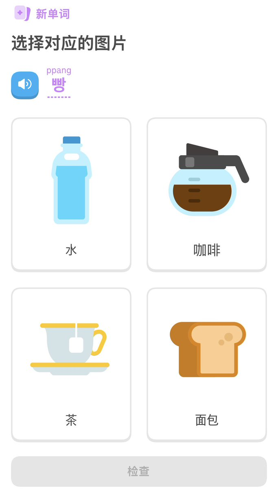

大狐帝国史官邹智萱（笔名段歌文）
@Rococo90933671
日语里的パン来自于葡萄牙语pão（复数pães，其实发音更像日语パウン-パインス），语源为拉丁语pānis，拉丁语的后代们（即罗曼语）基本上都沿用这种称呼，除了葡语外还有法语pain、西班牙语pan、意大利语pane、罗马尼亚语pâine、加泰罗尼亚语pa等，值得一提的是虽然拉丁语里这个词是阳性，但其后代不一定（罗语pâine就是阴性）。受到日语パン的影响，阿伊努语和韩语也叫パン和빵（ppang）

心心心奈 🇯🇵⛩️
@KokonaKokoro
パン🍞？ https://t.co/mgLEfwLsnY